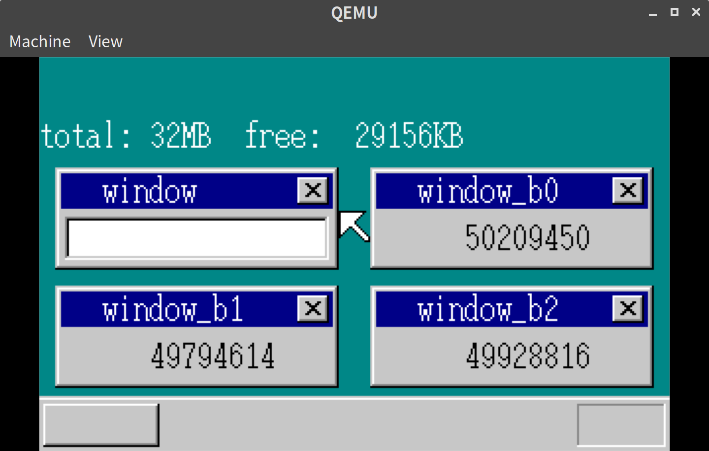
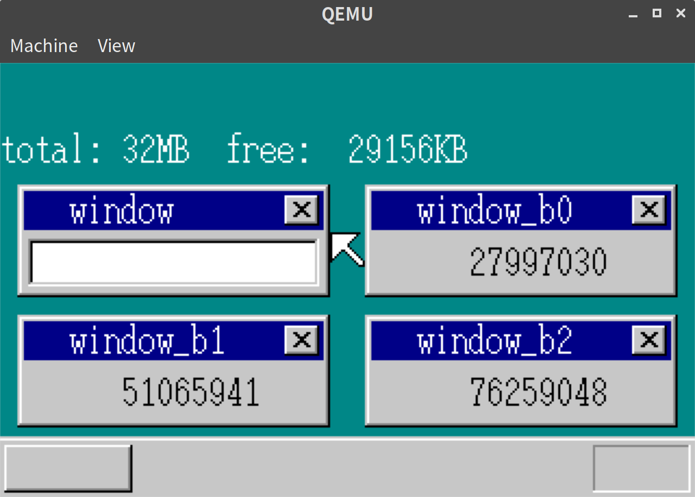

「30日でできる！OS自作入門」をRustで。16日目
「30日でできる！OS自作入門 」のC言語の部分をできるだけRustですすめてみる。今回は16日目の内容。
3つ以上のタスクを扱えるようにする
前回、2つのタスクの切り替えはできるようになった。
今回はこれを拡張して3つ以上のタスクを扱えるようにする。
基本的な方針はSheetManagerなどと同様だ。
// mt.rs
const MAX_TASKS: usize = 1000;
const TASK_GDT0: i32 = 3;
#[derive(Debug, Clone, Copy)]
pub struct Task {
pub select: i32,
pub flag: TaskFlag,
pub tss: TSS,
}
#[derive(Debug, Clone, Copy, PartialEq, Eq)]
pub enum TaskFlag {
AVAILABLE,
USED,
RUNNING,
}
impl Task {
fn new() -> Task {
Task {
select: 0,
flag: TaskFlag::AVAILABLE,
tss: Default::default(),
}
}
}
pub struct TaskManager {
pub running_count: i32,
pub now_running: i32,
pub tasks: [usize; MAX_TASKS],
pub tasks_data: [Task; MAX_TASKS],
}
pub static mut TASK_MANAGER_ADDR: usize = 0;
pub static mut MT_TIMER_INDEX: usize = 1001;
impl TaskManager {
pub fn new() -> TaskManager {
TaskManager {
running_count: 0,
now_running: 0,
tasks: [0; MAX_TASKS],
tasks_data: [Task::new(); MAX_TASKS],
}
}
pub fn init(&mut self) {
for i in 0..MAX_TASKS {
let mut task = &mut self.tasks_data[i];
task.select = (TASK_GDT0 + i as i32) * 8;
let gdt =
unsafe { &mut *((ADR_GDT + (TASK_GDT0 + i as i32) * 8) as *mut SegmentDescriptor) };
*gdt = SegmentDescriptor::new(103, &(task.tss) as *const TSS as i32, AR_TSS32);
}
let task_index = self.alloc().unwrap();
let mut task = &mut self.tasks_data[task_index];
task.flag = TaskFlag::RUNNING;
self.running_count = 1;
self.now_running = 0;
self.tasks[0] = task_index;
load_tr(task.select);
let timer_index_ts = TIMER_MANAGER.lock().alloc().unwrap();
TIMER_MANAGER.lock().set_time(timer_index_ts, 2);
unsafe {
MT_TIMER_INDEX = timer_index_ts;
}
}
pub fn alloc(&mut self) -> Result<usize, &'static str> {
for i in 0..MAX_TASKS {
if self.tasks_data[i].flag == TaskFlag::AVAILABLE {
let mut task = &mut self.tasks_data[i];
task.flag = TaskFlag::USED;
task.tss.eflags = 0x00000202; /* IF = 1; */
task.tss.iomap = 0x40000000;
return Ok(i);
}
}
return Err("CANNOT ALLOCATE TASK");
}
pub fn run(&mut self, task_index: usize) {
let mut task = &mut self.tasks_data[task_index];
task.flag = TaskFlag::RUNNING;
self.tasks[self.running_count as usize] = task_index;
self.running_count += 1;
}
pub fn switch(&mut self) {
TIMER_MANAGER.lock().set_time(unsafe { MT_TIMER_INDEX }, 2);
if self.running_count >= 2 {
self.now_running += 1;
if self.now_running == self.running_count {
self.now_running = 0;
}
crate::asm::farjmp(
0,
self.tasks_data[self.tasks[self.now_running as usize]].select,
);
}
}
}前回2つのタスクでやったことをほとんどそのままNタスクに拡張しただけなので、あまり難しいことはなかった。 lib.rsやasm.rsも変更する
// lib.rs
// haribote_is() のtask定義まわりを置き換え
let task_manager_addr = memman
.alloc_4k(core::mem::size_of::<TaskManager>() as u32)
.unwrap();
unsafe {
TASK_MANAGER_ADDR = task_manager_addr as usize;
}
let task_manager = unsafe { &mut *(task_manager_addr as *mut TaskManager) };
*task_manager = TaskManager::new();
task_manager.init();
let task_b_index = task_manager.alloc().unwrap();
let mut task_b = &mut task_manager.tasks_data[task_b_index as usize];
let task_b_esp = memman.alloc_4k(64 * 1024).unwrap() + 64 * 1024;
task_b.tss.esp = task_b_esp as i32;
task_b.tss.eip = task_b_main as i32;
task_b.tss.es = 1 * 8;
task_b.tss.cs = 2 * 8;
task_b.tss.ss = 1 * 8;
task_b.tss.ds = 1 * 8;
task_b.tss.fs = 1 * 8;
task_b.tss.gs = 1 * 8;
task_manager.run(task_b_index);// asm.rs
#[macro_export]
macro_rules! handler {
($name: ident) => {{
#[naked]
pub extern "C" fn wrapper() {
use crate::timer::NEED_SWITCH;
use crate::mt::{TaskManager, TASK_MANAGER_ADDR};
unsafe {
asm!("PUSH ES
PUSH DS
PUSHAD
MOV EAX,ESP
PUSH EAX
MOV AX,SS
MOV DS,AX
MOV ES,AX" : : : : "intel", "volatile");
asm!("CALL $0" : : "r"($name as extern "C" fn()) : : "intel");
if NEED_SWITCH {
NEED_SWITCH = false;
// task_managerのメソッドを呼び出すように変更
let task_manager = &mut *(TASK_MANAGER_ADDR as *mut TaskManager);
task_manager.switch();
}
asm!("POP EAX
POPAD
POP DS
POP ES
IRETD" : : : : "intel", "volatile");
}
}
wrapper
}}
}これで複数タスクを汎用的に扱えるようになった。
ここまでの実行結果は前回と変わらないので省略する。
タスクのスリープをする
次に、タスクA(メインのharibote_os()関数)をスリープできるようにし、タスクBのカウントアップに割く時間を増やせるようにする。
まずはTaskManagerにsleepを導入する。
// mt.rs
impl TaskManager
pub fn sleep(&mut self, task_index: usize) {
let mut need_taskswitch = false;
let mut task_order: usize = 0;
let task = self.tasks_data[task_index];
if task.flag == TaskFlag::RUNNING {
if task_index == self.tasks[self.now_running] {
// スリープする対象と今動いているタスクが同じなのでタスクスイッチが必要
need_taskswitch = true;
}
for i in 0..self.running_count {
task_order = i;
if self.tasks[i] == task_index {
break;
}
}
// タスクがひとつ減るのでつめる
self.running_count -= 1;
if task_order < self.now_running {
self.now_running -= 1;
}
for i in task_order..self.running_count {
self.tasks[i] = self.tasks[i + 1];
}
{
let mut task_mt = &mut self.tasks_data[task_index];
task_mt.flag = TaskFlag::USED;
}
if need_taskswitch {
if self.now_running >= self.running_count {
self.now_running = 0;
}
crate::asm::farjmp(0, self.tasks_data[self.tasks[self.now_running]].select);
}
}
}スリープしてしまうと何もできなくなってしまうので、Fifo側に起きる処理をいれる。
(Fifoがタスクを起こす、という構造は個人的に気持ち悪いが、一旦本に従う。)
// fifo.rs
pub struct Fifo {
pub buf: RefCell<[u32; 128]>,
pub p: Cell<u32>,
pub q: Cell<u32>,
pub free: Cell<u32>,
pub flags: Cell<u32>,
pub size: u32,
pub task_index: Option<usize>, // <- タスクのインデックスをもっておく
}
impl Fifo {
pub fn put(&self, data: u32) -> Result<(), &'static str> {
use crate::mt::{TASK_MANAGER_ADDR, TaskFlag, TaskManager};
if self.free.get() == 0 {
self.flags.set(self.flags.get() | FLAGS_OVERRUN);
return Err("FLAGS_OVERRUN ERROR");
}
{
let mut buf = self.buf.borrow_mut();
buf[self.p.get() as usize] = data;
}
self.p.set(self.p.get() + 1);
if self.p.get() == self.size {
self.p.set(0);
}
self.free.set(self.free.get() - 1);
// タスクを起こす処理
if let Some(task_index) = self.task_index {
let task_manager = unsafe { &mut *(TASK_MANAGER_ADDR as *mut TaskManager) };
if task_manager.tasks_data[task_index].flag != TaskFlag::RUNNING {
task_manager.run(task_index);
}
}
return Ok(());
}ここまでで準備はできたので、lib.rsのほうでスリープ処理をいれるようにする。
// lib.rs
// haribote_os()内
let task_a_index = task_manager.init().unwrap();
{
let mut fifo_mut = unsafe { &mut *(fifo_addr as *mut Fifo) };
fifo_mut.task_index = Some(task_a_index);
}
// loop内の処理
} else {
// 割り込みがなかったらスリープ
task_manager.sleep(task_a_index);
// スリープでとまるので、stihltからstiにする
sti();
}実行結果
これでタスクBのカウントアップ時間が長くとれるようになっているはずなので、確認する。
8秒後にカウンタの値を表示するようにして、5回ずつ実行してみる。
# スリープ処理を入れる前
1回目: 48838186
2回目: 47512996
3回目: 51429046
4回目: 53655888
5回目: 52088191
# スリープ処理を入れた後
1回目: 160266825
2回目: 156686867
3回目: 163515516
4回目: 145229328
5回目: 153168819桁が違うような差になってしまい、さすがに今回の処理ではない要素もありそうだが、改善したので一旦よしとする。
ウィンドウを複数表示する
ウィンドウを新たに3つ追加し、それぞれにタスクを割り当てるようにする。
表示側のみの変更なので、ほぼlib.rsのみの変更となる
// lib.rs
let mut sheet_win_b: [usize; 3] = [0; 3];
let mut task_b: [usize; 3] = [0; 3];
const B_WIN_HEIGHT: usize = 52;
const B_WIN_WIDTH: usize = 144;
for i in 0..(3 as usize) {
sheet_win_b[i] = sheet_manager.alloc().unwrap();
let buf_win_b_addr = memman
.alloc_4k((B_WIN_WIDTH * B_WIN_HEIGHT) as u32)
.unwrap();
sheet_manager.set_buf(
sheet_win_b[i],
buf_win_b_addr as usize,
B_WIN_WIDTH as i32,
B_WIN_HEIGHT as i32,
None,
);
make_window(
buf_win_b_addr as usize,
B_WIN_WIDTH as i32,
B_WIN_HEIGHT as i32,
"",
);
// titleを動的に作成したいので、ここでwrite
use core::fmt::Write;
let mut writer = vga::ScreenWriter::new(
Some(buf_win_b_addr as usize),
Color::White,
24,
4,
B_WIN_WIDTH,
B_WIN_HEIGHT,
);
write!(writer, "window_b{}", i).unwrap();
task_b[i] = task_manager.alloc().unwrap();
let mut task_b_mut = &mut task_manager.tasks_data[task_b[i]];
let task_b_esp = memman.alloc_4k(64 * 1024).unwrap() + 64 * 1024 - 8;
task_b_mut.tss.esp = task_b_esp as i32;
task_b_mut.tss.eip = task_b_main as i32;
task_b_mut.tss.es = 1 * 8;
task_b_mut.tss.cs = 2 * 8;
task_b_mut.tss.ss = 1 * 8;
task_b_mut.tss.ds = 1 * 8;
task_b_mut.tss.fs = 1 * 8;
task_b_mut.tss.gs = 1 * 8;
// 第1引数にsheet_win_b[i]を読みこみ
let ptr = unsafe { &mut *((task_b_mut.tss.esp + 4) as *mut usize) };
*ptr = sheet_win_b[i];
task_manager.run(task_b[i]);
}
sheet_manager.slide(shi_mouse, mx, my);
sheet_manager.slide(shi_win, 8, 56);
sheet_manager.slide(sheet_win_b[0], 168, 56);
sheet_manager.slide(sheet_win_b[1], 8, 116);
sheet_manager.slide(sheet_win_b[2], 168, 116);
sheet_manager.updown(shi_bg, Some(0));
sheet_manager.updown(shi_win, Some(1));
sheet_manager.updown(sheet_win_b[0], Some(2));
sheet_manager.updown(sheet_win_b[1], Some(3));
sheet_manager.updown(sheet_win_b[2], Some(4));
sheet_manager.updown(shi_mouse, Some(5));espの値を書き換えて第1引数としてsheetのインデックスを読み込むようにしている。
この処理は本では少し前にでてきていたが、static mutで足りていたので実装をサボっていた。
他はあまり特筆すべき点はない。 sheet_winとして表示しているテキストボックスつきのウィンドウもサイズと位置を変更しているが省略する。
実行結果
以下のように複数のウィンドウが表示され、それぞれカウンターの値が8秒後に表示されるようになった。

タスクの優先順位をつける
タスクに優先順位をつけられるようにする。
struct Task に priority というフィールドを追加する。
// mt.rs
#[derive(Debug, Clone, Copy)]
pub struct Task {
pub select: i32,
pub flag: TaskFlag,
pub priority: i32,
pub tss: TSS,
}これに伴って、run, switchを変更する。
// mt.rs
impl TaskManager {
pub fn run(&mut self, task_index: usize, priority: i32) {
let mut task = &mut self.tasks_data[task_index];
if priority > 0 {
task.priority = priority;
}
if task.flag != TaskFlag::RUNNING {
task.flag = TaskFlag::RUNNING;
self.tasks[self.running_count] = task_index;
self.running_count += 1;
}
}
pub fn switch(&mut self) {
self.now_running += 1;
if self.now_running == self.running_count {
self.now_running = 0;
}
let task = self.tasks_data[self.tasks[self.now_running]];
TIMER_MANAGER
.lock()
.set_time(unsafe { MT_TIMER_INDEX }, task.priority as u32);
if self.running_count >= 2 {
crate::asm::farjmp(0, task.select);
}
}
}あわせて、fifo.rsでtaskをrunしているところを変更した。詳細は割愛する。
lib.rsのrunは以下のようにpriorityを引数に追加する。
実行結果
以下のように優先順位によってカウンターの値が、約1:2:3になったことがわかる。

優先度の階層づけをする
例えば、音楽を再生するアプリケーションの場合、同じ優先度でマウスの操作があった場合も、音楽が切れるのは困る。
優先度を階層構造にすることで、絶対に優先させたいものを指定できるようになる。
TaskLevel というstructを導入して優先度をレベルでわけられるようにする。
// mt.rs
const MAX_TASKS_LV: usize = 100;
const MAX_TASKLEVELS: usize = 10;
#[derive(Clone, Copy)]
pub struct TaskLevel {
pub running_count: usize,
pub now_running: usize,
pub tasks: [usize; MAX_TASKS_LV],
}
impl TaskLevel {
pub fn new() -> TaskLevel {
TaskLevel {
running_count: 0,
now_running: 0,
tasks: [0; MAX_TASKS_LV],
}
}
}
pub struct TaskManager {
pub now_lv: usize,
pub lv_change: bool,
pub level: [TaskLevel; MAX_TASKLEVELS],
pub tasks_data: [Task; MAX_TASKS],
}TaskManager -> TaskLevel -> Task という階層構造になる。
このTaskLevelをつかって、よりレベルの数値が低いものがある場合にそちらが優先されるように実装をかえる。
// mt.rs
impl TaskManager {
pub fn new() -> TaskManager {
TaskManager {
now_lv: 0,
lv_change: false,
level: [TaskLevel::new(); MAX_TASKLEVELS],
tasks_data: [Task::new(); MAX_TASKS],
}
}
pub fn now_index(&self) -> usize {
let tl = self.level[self.now_lv];
tl.tasks[tl.now_running]
}
pub fn add_task(&mut self, task_index: usize) {
{
let mut lv = &mut self.level[self.tasks_data[task_index].level];
lv.tasks[lv.running_count] = task_index;
lv.running_count += 1;
}
{
let mut task = &mut self.tasks_data[task_index];
task.flag = TaskFlag::RUNNING;
}
}
pub fn remove_task(&mut self, task_index: usize) {
let mut lv = &mut self.level[self.tasks_data[task_index].level];
let mut task_order = 0;
for i in 0..lv.running_count {
task_order = i;
if lv.tasks[i] == task_index {
break;
}
}
lv.running_count -= 1;
if task_order < lv.now_running {
lv.now_running -= 1;
}
if lv.now_running >= lv.running_count {
lv.now_running = 0;
}
let mut task = &mut self.tasks_data[task_index];
task.flag = TaskFlag::USED;
for i in task_order..lv.running_count {
lv.tasks[i] = lv.tasks[i + 1];
}
}
pub fn switchsub(&mut self) {
let mut now_lv = 0;
for i in 0..MAX_TASKLEVELS {
now_lv = i;
if self.level[i].running_count > 0 {
break;
}
}
self.now_lv = now_lv;
self.lv_change = false;
}
pub fn init(&mut self) -> Result<usize, &'static str> {
for i in 0..MAX_TASKS {
let mut task = &mut self.tasks_data[i];
task.select = (TASK_GDT0 + i as i32) * 8;
let gdt =
unsafe { &mut *((ADR_GDT + (TASK_GDT0 + i as i32) * 8) as *mut SegmentDescriptor) };
*gdt = SegmentDescriptor::new(103, &(task.tss) as *const TSS as i32, AR_TSS32);
}
let task_index = self.alloc()?;
{
let mut task = &mut self.tasks_data[task_index];
task.flag = TaskFlag::RUNNING;
task.priority = 2;
task.level = 0;
}
self.add_task(task_index);
self.switchsub();
let task = self.tasks_data[task_index];
load_tr(task.select);
let timer_index_ts = TIMER_MANAGER.lock().alloc().unwrap();
TIMER_MANAGER
.lock()
.set_time(timer_index_ts, task.priority as u32);
unsafe {
MT_TIMER_INDEX = timer_index_ts;
}
Ok(task_index)
}
pub fn run(&mut self, task_index: usize, level_i32: i32, priority: i32) {
let task = self.tasks_data[task_index];
let level: usize;
if level_i32 < 0 {
level = task.level;
} else {
level = level_i32 as usize;
}
if priority > 0 {
let mut task = &mut self.tasks_data[task_index];
task.priority = priority;
}
if task.flag == TaskFlag::RUNNING && task.level != level {
self.remove_task(task_index);
}
// フラグがかわる可能性があるのでtaskをとりなおし
if self.tasks_data[task_index].flag != TaskFlag::RUNNING {
let mut task = &mut self.tasks_data[task_index];
task.level = level;
self.add_task(task_index);
}
self.lv_change = true;
}
pub fn switch(&mut self) {
let mut lv = &mut self.level[self.now_lv];
let now_task_index = lv.tasks[lv.now_running];
lv.now_running += 1;
if lv.now_running == lv.running_count {
lv.now_running = 0;
}
if self.lv_change {
self.switchsub();
lv = &mut self.level[self.now_lv];
}
let new_task_index = lv.tasks[lv.now_running];
let new_task = self.tasks_data[new_task_index];
TIMER_MANAGER
.lock()
.set_time(unsafe { MT_TIMER_INDEX }, new_task.priority as u32);
if new_task_index != now_task_index {
farjmp(0, new_task.select);
}
}
pub fn sleep(&mut self, task_index: usize) {
let task = self.tasks_data[task_index];
if task.flag == TaskFlag::RUNNING {
let now_index = self.now_index();
self.remove_task(task_index);
if task_index == now_index {
// スリープする対象と今動いているタスクが同じなのでタスクスイッチが必要
self.switchsub();
let now_task = self.tasks_data[self.now_index()];
farjmp(0, now_task.select);
}
}
}
}lib.rsとfifo.rsの呼び出す側も変更する。
// lib.rs
// task_a(haribote_os())はレベル1でpriority2
task_manager.run(task_a_index, 1, 2);
// task_bはレベル2でpriorityがそれぞれ変わる
task_manager.run(task_b[i], 2, (i + 1) as i32);実行結果
画面は特に変わらず、メイン関数が優先されるようになったので、マウスの動きがよくなった(ような気がする)。
16日目は以上となる。ここまでの内容のコードはyoshitsugu/hariboteos_in_rustのday16としてタグを打ってある。